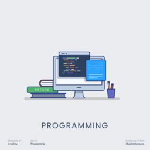
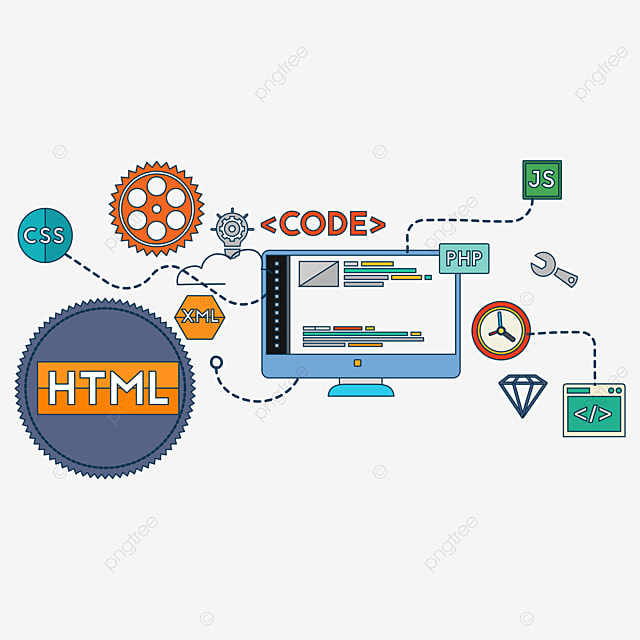
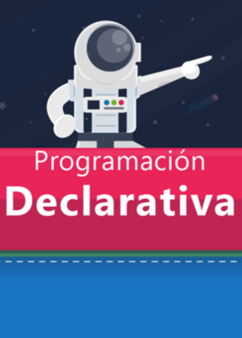

Qué es un paradigma de programación
Los paradigmas de la programación son principios fundamentales para la creación de software, es decir, los distintos estilos que existen para generar código y dar instrucciones a máquinas, computadoras y otros dispositivos.
Los programas informáticos tratan de resolver problemas y ofrecer opciones a los usuarios para que realicen diferentes tareas utilizando un hardware determinado. Para poder resolver estos problemas es necesario afrontarlos de diferentes maneras, siendo más eficiente un paradigma de programación que otro, dependiendo del tipo de problema que se presenta.
Podemos entender un paradigma de programación como un camino, ruta o guía que agilizan el desarrollo web, siguiendo una estructura y reglas determinadas Seguir leyendo...

Tipos de paradigmas de programación
Programación Imperativa

Se trata del paradigma clásico de programación, donde se definen en el código, paso a paso, cada una de las instrucciones que se deben ejecutar en un programa. Algunos ejemplos de este tipo de paradigmas son el Pascal, C y C++.
Dentro de la programación imperativa podemos encontrar diferentes enfoques subordinados a este paradigma.

Programación estructurada
Es un tipo de programación imperativa donde se controla el flujo utilizando condicionales, subrutinas y
bucles (“if” o “do…while”, por ejemplo). Se evita utilizar los saltos absolutos entre instrucciones.
Seguir leyendo...
Programación procedimental
En la programación procedimental se divide el código en partes más pequeñas y manejables llamadas
procedimientos o funciones. De esta manera se consigue que el código sea más claro y que no sean necesarias
las repeticiones de código gracias a las llamadas a las funciones y procedimientos. Ejemplos de este tipo
de lenguajes son el Python o el C#.
Programación orientada a objetos
En el paradigma de programación orientada a objetos todos los elementos de un programa son tratados como un
objeto que cuenta con sus propios atributos. La relación y el comportamiento entre esos objetos es lo que
permite dar forma al software.
Seguir leyendo...
Programación Declarativa
A medida que el hardware evoluciona con el paso del tiempo, el software también experimenta un proceso de
mejora y cambio, apareciendo un paradigma alternativo de programación, la declarativa. En este tipo de
programación se describe el resultado final que se busca, siendo más importante lo que se persigue que
cómo se consigue.
La programación declarativa tiene un alto grado de abstracción lo que hace que su código sea más difícil de comprender.

Programación funcional
El código de los programas funcionales está dividido en una serie de funciones, que reciben datos, operan
con ellos y devuelven un valor de salida. Este tipo de programación es ideal para crear algoritmos para
resolución de complejos problemas (inteligencia artificial o aplicaciones técnicas y matemáticas).
Ejemplos de este tipo de lenguajes son el Scala, LISP o F#
Programación lógica
La programación lógica o predictiva está basada en la lógica matemática, siguiendo una serie de principios
basados en hechos y suposiciones. Este tipo de programas aplica las reglas de la lógica matemática para ir
resolviendo los problemas a los que se enfrenta. Ejemplos de este tipo de lenguajes son el Haskell, Prolog
o JavaScript.
Conclución
Hemos hablado sobre qué son los paradigmas de programación y los distintos tipos que existen. Hoy en día es habitual que los desarrolladores y programadores trabajen con diferentes lenguajes de programación, abrazando diferentes paradigmas.
Los distintos paradigmas son útiles para resolver diferentes tipos de problemas por lo que no es posible decir si uno es mejor que otro, ya que depende del proyecto de programación y problema al que se haga frente.
Seguir leyendo...